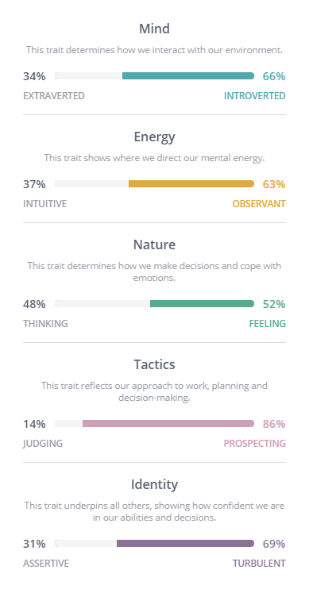
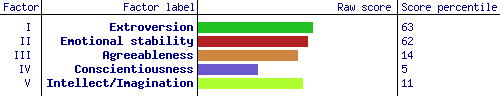

About me
I am a motivated IT student who has acquired extensive knowledge in this field through intensive gaming. I have a logical mind with a practical approach to problem solving and the motivation to see tasks through to completion. I have good interpersonal skills, allowing me to communicate effectively with a wide range of people. In my previous customer service role, I demonstrated the ability to work under pressure, and handle customer complaints. I am eager to be challenged to grow and improve my skills.
Interest in IT
I am interested in the field of IT as I feel it can challenge me and requires continued learning and updating of skills. My interest in IT started early, in preschool, and developed over time adapting as technology advanced and my interests changed. As games became more complex, I became interested in how they were made and what was happening at “the back end”. My formal IT work experience is limited but I am particularly interested in cyber security and working with companies to protect data and develop anti-hacking solutions.
I chose RMIT because of their reputation in IT courses, wide variety of specialisation options including security and cloud computing. The online delivery was also attractive, particularly during recent periods of state border closures.
During my studies I expect to learn theoretical and practical skills relevant to the sector along with the skills required for continued learning. I also hope to learn group work skills and study, research and writing skills to equip me for future study.
Ideal Job
Description of position
This position is part of an expanding industry designed to alleviate the surge of data breaches within Australia and the need to support enterprise in protecting information. Most of these breaches are the result of malicious or criminal acts. Most of these breaches can be prevented by following best practice cyber security standards. These practices have further evolved following the transition to remote work for many companies. This position involves working within a team to support clients to manage risks and challenges around cyber security and safeguarding their information and adapting and developing solutions when factual, accounting, financial, regulatory, or cyber problems arise.
Description of skills required
Technical skills developed during undergraduate study in information technology along with specialist skills in managing and coordinating cyber incidents are required for this job. Training and skills required for forensic analysis of digital evidence is also required. Personal skills required include teamwork and the ability to work with people at all levels, excellent interpersonal and communication skills, good time and project management skills and ability to work under pressure, professional and collaborative attitude
Description of skills I have
I have good interpersonal and communication skills and a collaborative attitude. I have emerging personal skills in the areas of teamwork and project management. I have started to develop the technical skills consistent with those required for this position. I have beginner HTML skills and beginner java skills. Continue to complete degree in IT with specialisation in Relevant industry certifcyber security. Additional industry experience through internship would be helpful. Qualifications such as EnCase, FTK, Cellebrite, Nuix, Axiom and related computer forensic software tools would be advantageous.
Personality Profile
Learning Style | as assessed by www.educationplanner.org
Auditory: 25%
Visual: 40%
Tactile: 35%
 Project Idea
My project idea is to design a website and application for gamers to support social connections with similarly minded peers. The website and application will primarily assist gamers to connect with others, arrange play times using a calendar system, and to connect during play. The program would be set up to support gamers to find others with similar interest by connecting people with similar account profiles of interests, games, console type and server type and skill level. This approach will allow players to find others in their game of choice and skill level. Profile settings will be designed to be adaptive to support gamers to connect with others depending on their current gaming/social connection needs. For example, light casual gaming connections may be desired during intense study periods and connections with more intense gamers suitable during holiday periods, poor weather, COVID-19 lockdowns, or quarantine periods. Gamers may also desire to be linked with teams to play for competitive titles. The site could also be used to provide coaching services for new gamers. Advanced players will be able to apply to be a coach for a given title and provide coaching services to less experienced or skilled players in the lead up to certain events. I believe this website would function like LinkedIn with some dating app features to assist IT and gamers to access jobs and training opportunities along with social connections.
Due to the current COVID-19 pandemic there is a large influx of new and returning gamers with more free time. Many are confined to home, some due to having lost secure employment. Many of these new and returning gamers have experienced a drastic reduction in social contact, may be experiencing life related stress placing them at risk of poor mental health. This website and application will allow these players are able to meet others to play and socialise with some potential for paid coaching work. The website could maximise the success of social gaming interactions, reduce the likelihood of poor or toxic team dynamins consequently improving self-esteem for some. Further opportunity for skill development for new and returning players may also help increase confidence, decrease stress, and improve mental wellbeing.
The main idea behind this website and application is to give gamers a place to be able to connect with others within their games of interest. When players make an account for the website, they will complete a series of questions about their gaming preferences, interests, current skill level and areas for improvement. An additional section will request information about play categories of interest (i.e. casual gaming, competitions, team sports), console types (i.e., PC and XBOX) and location – to maximise WIFI connection strength with matched gamers. Once gamers have entered these details and set up their profile, they are provided with possible matches and can scroll through other player profiles with similar account details. Players will be able to wave at these other players and send a message to them to request a gaming connection. These connections are the primary purpose of the proposed website and supplication. Gamers will also be able to connect through a group/team signup page where players can post what game and skill level requirements for team sports. The coaching service section of the website will support connections between experienced or skilled players with gamers keen to improve their skills. This section will function similarly to the main connections section with coaches that have applied for and met certain skill standard provided with a set fee for their coaching. This section will also allow for a financial transfer with a small percentage of the funds used for continued website development. Further advancements of this website and application could allow the site to function as a hub for different gaming events and tournaments set up by the players. Users will be able to access this website through their computers and their mobile devices.
The hardware needs of this website and application should be minimal for both construction and for gamers using the program. A working computer and mobile devise will be required to test the program during and after development. There will likely be a need for a host server to support the website and information software. Software requirements are relatively light - HTML ide and a standard application to design simple mobile applications will be sufficient.
An intermediate knowledge of coding will be needed for this product development and rollout. Due to the online features of this website and application, a strong knowledge of Networking will be required prior to creation and rollout. It is not anticipated that very advanced skills will be required to create this website and application due to the simplicity of the website and availability of most consumer software capable of creating websites and applications. Consultation with experienced program developers and creative designers may be required to overcome any challenges or unforeseen difficulties that arise during website and application development.
If successful, this website and application would address a challenge experienced by many gamers – connecting with others of similar interests. These connections may be particularly valuable to new and returning gamers at risk of poor mental health affected by the current COVID 19 pandemic. If successful there is opportunity for growth and additional features as technology advances and as a response to the needs of gamers and the changing world environment. One example may be other markers such as table-top games such as dungeons and dragons and hobby gaming may experience a surge in interest following decrease in social distancing recommendations.